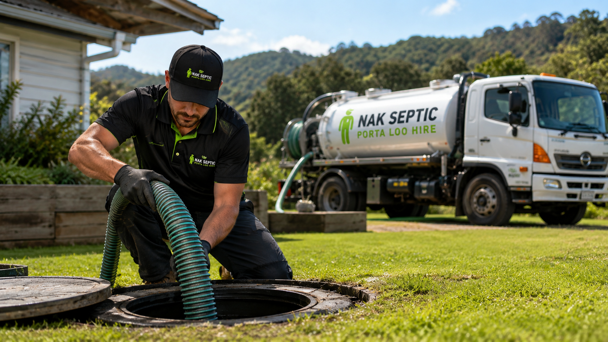
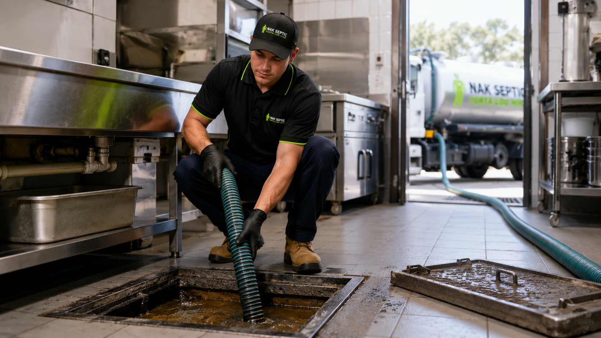
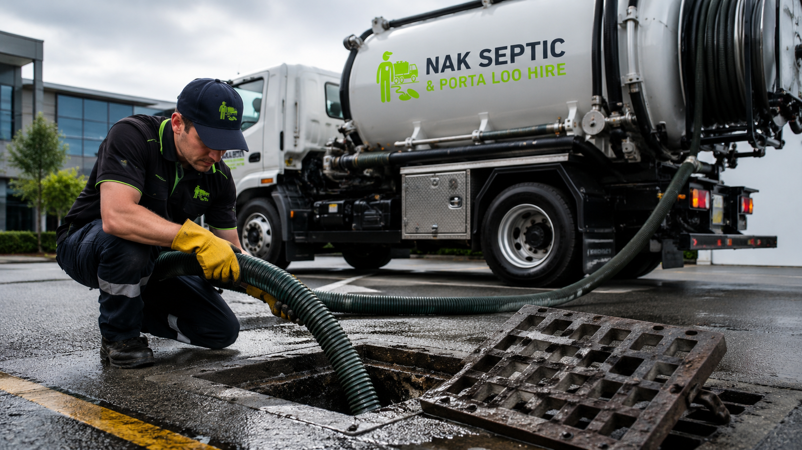
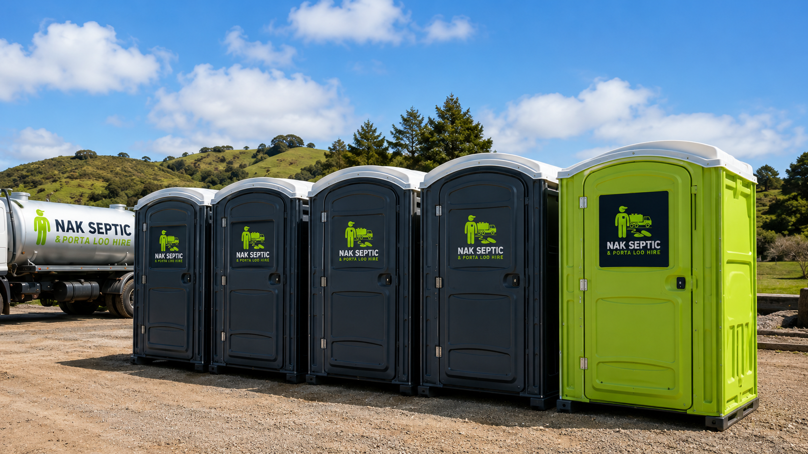
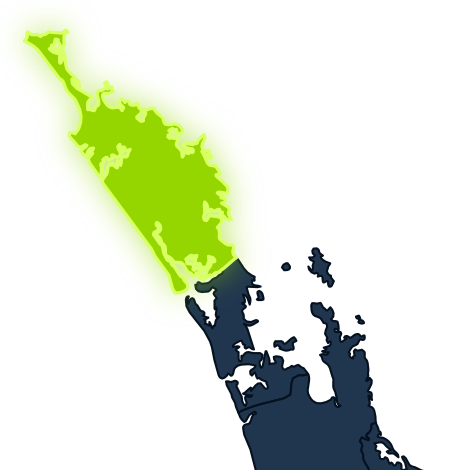

24/7 ServiceWe're here when you need us.
Northland Septic Specialists
Septic Tank Cleaning & Porta Loo Hire in Northland
Prompt, professional septic tank cleaning and reliable porta loo hire. Locally owned & operated.
Fully LicensedQualified, compliant & professional.
Northland WideKerikeri to the Far North.
Our Services
Complete Waste Solutions

Septic Tank Cleaning
Thorough tank pumping & waste removal for homes, lifestyle blocks & businesses.

Grease Trap Cleaning
Keep your systems flowing smoothly and your business running clean.

Stormwater / Cess Pit Cleaning
Remove sludge, silt & debris to maintain drainage and prevent overflows.

Porta Loo Hire
Clean, reliable portable toilets for events, worksites & rural properties.
Why Choose NAK Septic?
Reliable Local Service, Done Properly
Locally Owned & Operated
Proud to be part of the Northland community.
Fully Licensed Operator
Work done safely, professionally & to regulatory standards.
24/7 Service
Day or night, we're ready to help.
WINZ Quotes
We provide quotes for WINZ customers quickly & easily.
Neighbour Discounts
Discounts available for multiple tank cleans in the same locality.
Satisfaction Guaranteed
We stand by the quality of our work.
Northland / Far North Coverage
From Whangarei to the Far North.
Stay Compliant. Protect Your Property.
Septic tanks should be cleaned every 5 years. Regular cleaning prevents overflows, blockages and costly repairs, and keeps your system running safely and efficiently.
Our Process
Simple, Fast & Reliable
Get in Touch
Call us or request a quote online.
We Schedule
We'll find a time that works for you.
We Get the Job Done
Our team arrives on time and gets it done right.
Clean & Compliant
Your system is cleaned and running smoothly.
Satisfaction Guaranteed
We won't leave until you're happy.
Northland Coverage
We Come To You
Based in Kerikeri, we provide septic tank cleaning and porta loo hire across Northland and the Far North.

Serving Rural, Urban, Residential & Commercial
From lifestyle blocks to large commercial sites, we have the equipment and expertise.
What Our Clients Say
Trusted Across Northland
★★★★★
"Fast, friendly and professional. Wouldn't go anywhere else!"
- Lisa, Kerikeri
★★★★★
"Great service at short notice. Highly recommend NAK Septic."
- Mark, Kaitaia
★★★★★
"Reliable, honest and local. Top team."
- Rachel, DargavilleFAQs
Helpful Septic Service Answers
As a practical rule, septic tanks should be cleaned every 5 years. Higher-use properties may need a shorter schedule.
Yes. We service homes, lifestyle blocks, businesses, events, worksites and rural properties across Northland and the Far North.
Yes. Contact us with the job details and we can prepare a quote for WINZ customers.